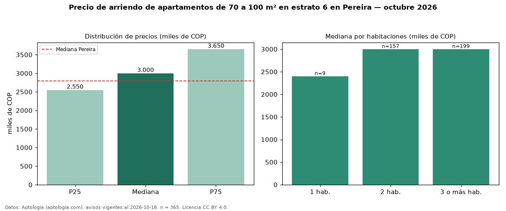

Precio de arriendo de apartamentos de 70 a 100 m² en estrato 6 en Pereira — octubre 2026
Con 365 avisos vigentes, el canon mediano de apartamentos de 70 a 100 m² en estrato 6 en arriendo en Pereira es COP 3,00 millones al mes. Frente a la mediana de los apartamentos en estrato 6 en arriendo de Pereira (COP 3,30 millones, n = 917), queda 9 % por debajo; este segmento reúne el 40 % de esos avisos. Por metro cuadrado, la mediana es COP 36.250/m² al mes (n = 365), 4 % por encima de los apartamentos en estrato 6 en arriendo de Pereira (COP 35.000/m²). El área mediana anunciada es 85 m². El segmento con más oferta es el de 3 o más habitaciones (199 avisos, mediana COP 3,00 millones); pasar de 1 habitación a 3 o más habitaciones cambia la mediana +25 %. La administración mediana declarada es COP 420.000 al mes (n = 224), aparte del canon. La mediana de todos los apartamentos en arriendo de Pereira es COP 2,80 millones (+7 % de diferencia). La mitad central de los avisos va de COP 2,55 millones a COP 3,65 millones (razón 1,4), una dispersión moderada. Datos: Aptología (aptologia.com), CC BY 4.0 — https://www.aptologia.com/arriendo/pereira. Archivos: PDF, CSV con las cifras y gráfica PNG.

| Avisos únicos | 365 |
|---|---|
| Percentil 25 | COP 2.550.000 |
| Mediana | COP 3.000.000 |
| Percentil 75 | COP 3.650.000 |
| Mediana por m² | COP 36.250 |
Fuente: avisos vigentes de portales inmobiliarios recopilados por Aptología, deduplicados (mínimo 30 avisos únicos por celda). Precios pedidos, no cerrados. Fecha: 2026-10-18.